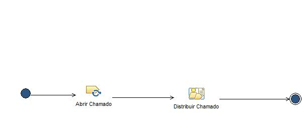
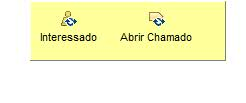

Phase: Distribuição
Etapa de distribuição dos chamados abertos, levando em consideração o tipo de solicitação e o requisitante da demanda.
Description
Work Breakdown Structure
Team Allocation
Work Product Usage
Workflow


Work Breakdown